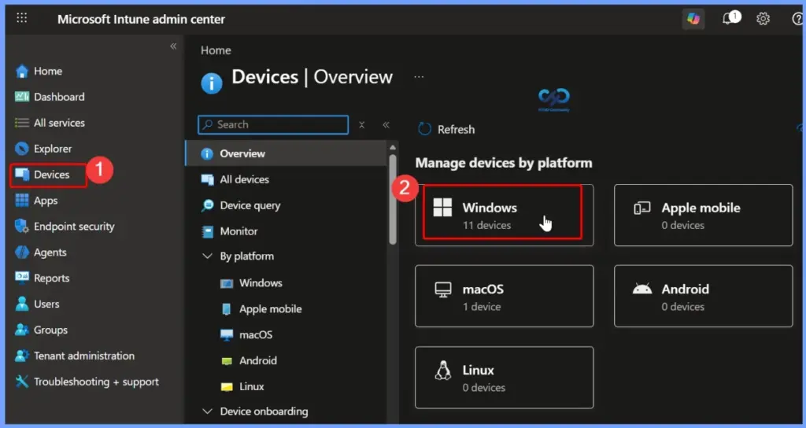
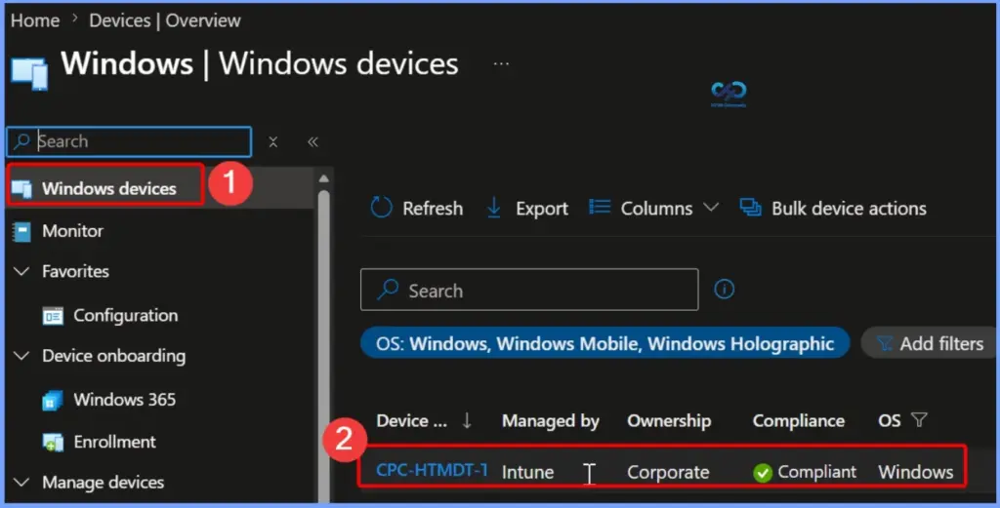
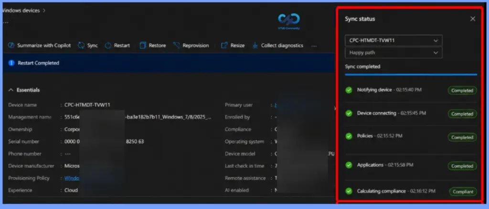

Key Takeaways
- Live Sync Progress Tracking
- Combined MDM and IME Check-In
- Single Sync for Policies, Apps, and Scripts
- Improved Per-Device Troubleshooting
- Detailed Sync Status Pane
The updated Windows device sync experience in the Microsoft Intune admin center helps you provide live sync progress. It gives admins better visibility into every stage of the synchronisation process. Instead of waiting without feedback, admins can monitor each step in real time. It makes it easier to confirm that the sync is running successfully and identify where the device is in the process during troubleshooting.
Table of Content
Prerequisites for Windows Device Sync
Before you use the Sync action in Microsoft Intune, make sure your device platform is supported and your account has the required permissions to act. Supported Device Platforms and Required Roles and Permissions are listed below.
- Supported Device Platforms
- Android
- iOS/iPadOS
- macOS
- tvOS
- visionOS
- Windows
- Required Roles and Permissions
| Intune Roles |
|---|
| Help Desk Operator School Administrator Endpoint Security Manager A custom role with: Remote tasks > Sync devices permission Permissions to view and manage devices, such as Organization/Read and Managed devices/Read |
Updated Windows Device Sync Experience Enhances Per-Device Troubleshooting
The enhanced sync action also helps you perform both the Mobile Device Management (MDM) check-in and the Intune Management Extension (IME) check-in for Windows devices with a single click. This allows the device to retrieve the latest policies, applications, and scripts in one operation, simplifying troubleshooting and helping admins validate device changes more efficiently.

Select a Windows Device From the List of Windows Devices
From the Windows devices list in the Microsoft Intune admin center, select the device you want to manage or troubleshoot. This opens the device overview page, where you can view device details, monitor status, and perform actions such as Sync, Restart, Collect diagnostics, or other remote management tasks.
- Here we are selecting the CPC-HTMDT-TVWI1 Device

View the Windows Device Sync Status
The updated Windows device sync experience in Microsoft Intune provides real-time sync progress, allowing admins to track each stage of the synchronization process. A single sync action now triggers both the Mobile Device Management (MDM) and Intune Management Extension (IME) check-ins, ensuring the latest policies, applications, and PowerShell scripts are applied in one operation.
| Features | Details |
|---|---|
| Single Sync for Policies, Apps, and Scripts | A single sync action retrieves the latest policy, application, and PowerShell script changes in one operation, reducing troubleshooting time and ensuring devices receive the latest updates. |
| Improved Per-Device Troubleshooting | The enhanced sync experience provides better visibility into sync actions, allowing admins to verify that tasks are running successfully and identify the current stage of the sync process. |
| Detailed Sync Status Pane | The Sync Status pane displays each synchronisation stage, including Notifying Device, Device Connecting, Policies, Applications, Scripts, and Calculating Compliance, along with timestamps and completion status for easier validation and troubleshooting. |

Resources
Device Action: Sync – Microsoft Intune | Microsoft Learn
What’s new in Microsoft Intune – July
Need Further Assistance or Have Technical Questions?
Join the LinkedIn Page and Telegram group to get the latest step-by-step guides and news updates. Join our Meetup Page to participate in User group meetings. Also, join the WhatsApp Community and the Whatsapp channel to get the latest news on Microsoft Technologies. We are there on Reddit as well.
Author
Anoop C Nair is a Workplace Technology solution architect with 25+ years of experience. Microsoft Certified Trainer. Microsoft MVP from 2015 onwards for consecutive 11+ years! He is a blogger, Speaker, and Founder of HTMD Community and HTMD Conference. His main focus is on Device Management technologies like Intune, Windows, and Cloud PC. He writes about technologies like Intune, SCCM, Windows, Cloud PC, Entra, and Microsoft Security.